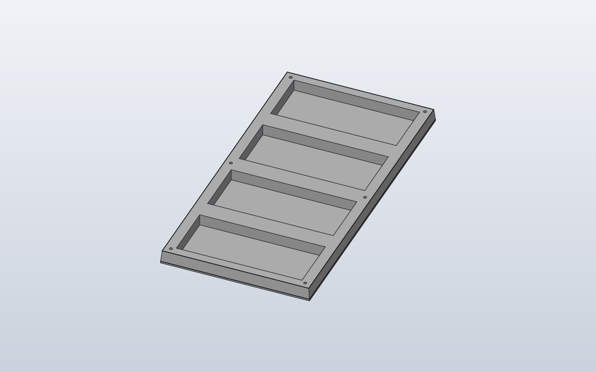
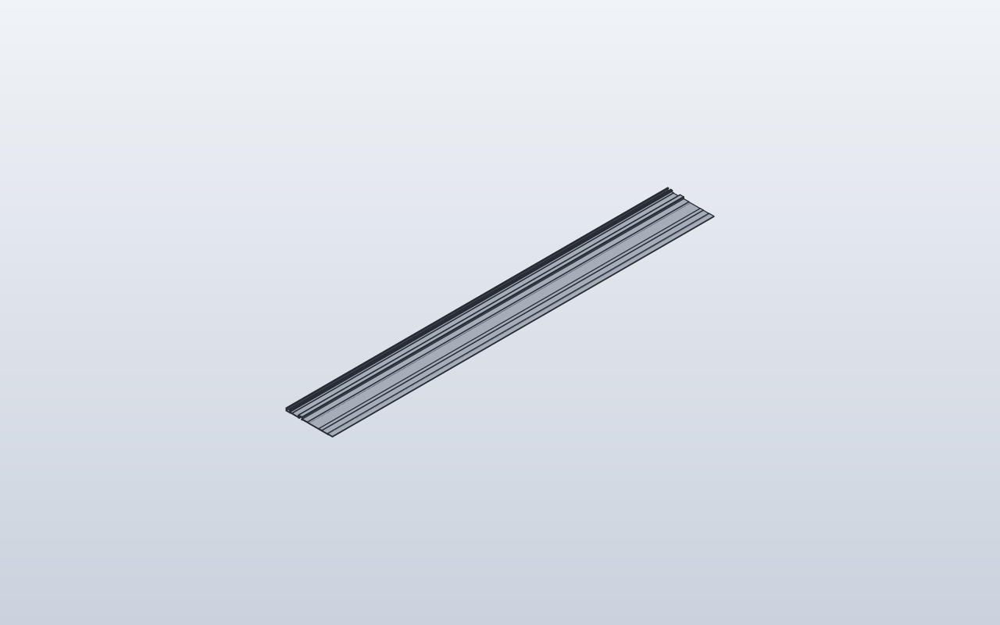

Published render
CornerBracket
24 mm plywood corner bracket without mounting holes
24 mm width, 12 mm wall, 60 mm arms; no screw holes
Explore model →Reusable physical parts compiled directly from the same source assemblies import.
24 mm plywood corner bracket without mounting holes
24 mm width, 12 mm wall, 60 mm arms; no screw holes
Explore model →
One measured reusable P5 HUB75 panel component
159.70 × 319.71 × 14.50 mm; six Ø3 holes; direct shared component root
Explore model →
Passive 20 mm MFT bench dog with a four-segment flex stem
20.0 mm nominal hole; Ø20.2 mm flared flex tip; Ø24 × 3 mm rim; 20 mm above and 20 mm below worktop
Explore model →
Parametric guide rail using the detailed Festool reference extrusion
184.20 × 10.50 mm profile; 600 mm standalone example; editable length
Explore model →
The same GuideRail component with the Makita 199141-8 profile
182.50 × 10.28 mm profile; 600 mm standalone example
Explore model →